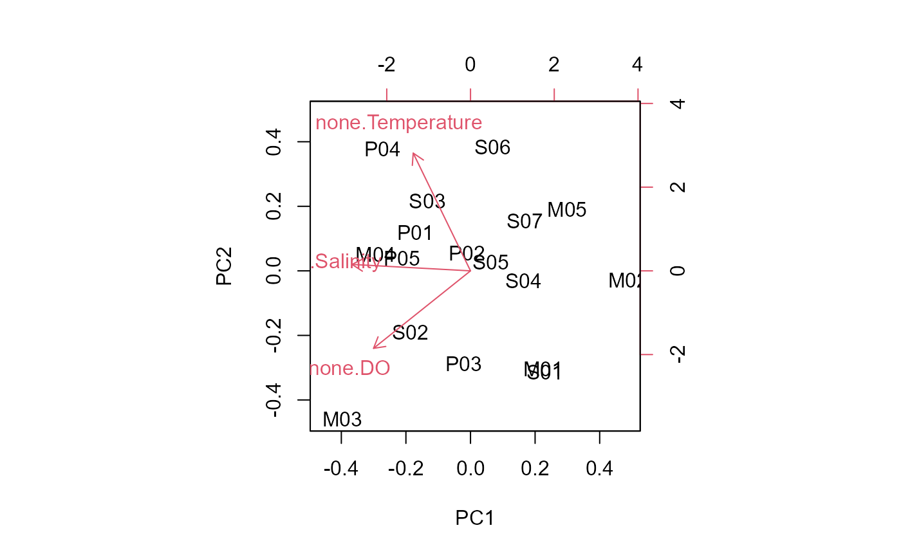
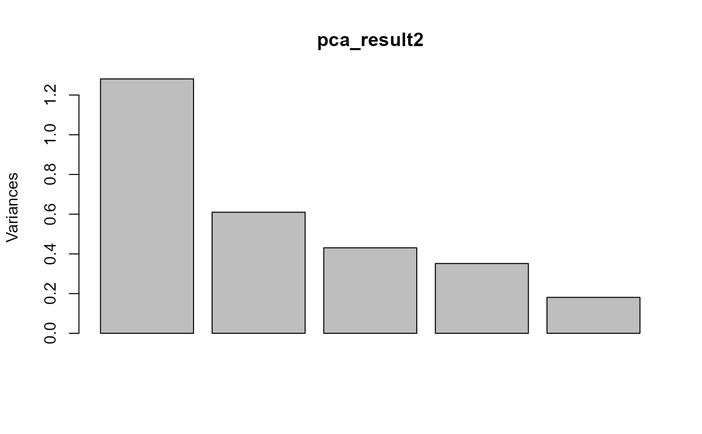
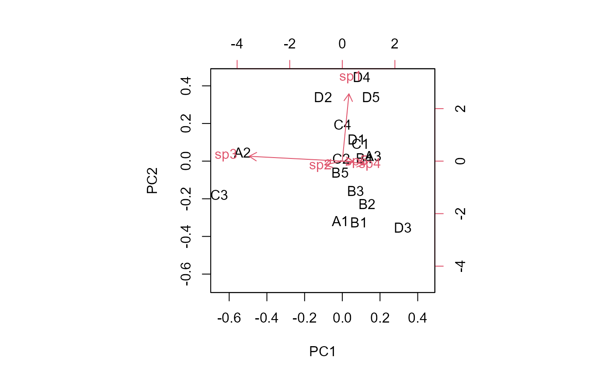

TransformData.RdTransforms environmental and biological data to achieve normality. Supports multiple data types with automatic or user-specified transformations, ideal for preparing data before statistical analyses like PCA, RDA, ANOVA.
TransformData(
DF,
shape = "w",
data_type = "env",
version = "l",
alpha = 0.05,
min_sd = 0,
test = "shapiro",
trans = "r4",
scale = FALSE,
rel_type = "total"
)A data.frame containing the data to transform. Must include at least one identifier column and one or more numeric columns.
Character. Format of the input data: "w" (wide) or "l" (long).
"w": Samples in first column, variables in subsequent columns (default)
"l": Variables in first column, samples in subsequent columns
Character. Type of data to transform. Options:
"env": Environmental data - sequential transformations until normality
"bio": Biological/abundance data - single transformation
"percent": Percentage/proportion data - arcsine-square root
"pa": Presence-absence conversion
"scale": Z-score standardization only (no transformation)
Character. Output format: "l" (long) or "s" (short).
"l": Returns complete data.frame with first column preserved (default)
"s": Returns list with separated transformed/untransformed data and reports
Numeric. Significance level for normality tests (default = 0.05).
Only used when data_type = "env".
Numeric. Minimum standard deviation threshold. Variables with SD
<= min_sd are excluded (default = 0). Only used when data_type = "env".
Character. Normality test to use: "shapiro" (Shapiro-Wilk) or
"ks" (Kolmogorov-Smirnov). Default = "shapiro".
Character. Transformation for biological data. Options:
"r4": Fourth root (x^0.25) - default
"l1": Log(x + 1)
"sq": Square root
"Ch": Chord transformation
Logical. If TRUE, applies z-score standardization to the
final data. For data_type = "env", scales all variables (normal + non-normal).
Default = FALSE.
Character. Type of relativization when data_type = "rel".
Options: "total" (divide by row sum) or "max" (divide by row maximum).
Default = "total".
If version = "l": A data.frame with the first column preserved and all
variables (transformed/untransformed). Transformation metadata stored as attributes.
If version = "s": A list containing:
normal_data / transformed_data: Transformed variables
non_normal_data: Untransformed variables (only for "env")
transformation_report: Detailed transformation log
summary: Summary statistics
Environmental data ("env"):
Applies sequential transformations to each variable until normality is achieved
(p > alpha) or all options are exhausted:
No transformation (test original data)
Square root
Log(x + 1)
Fourth root
Variables that remain non-normal are kept in their original scale.
Biological data ("bio"):
Applies a single transformation to all variables. Common choices:
Fourth root: Recommended for count/abundance data
Log(x+1): For highly skewed data with zeros
Chord: For community composition data
Percentage data ("percent"):
Automatically converts percentages (>1) to proportions (0-1) and applies
arcsine-square root transformation. Useful for granulometry, cover, or
relative abundance data.
Presence-Absence ("pa"):
Converts all values > 0 to 1 and 0 to 0. Useful for community composition
analyses (Jaccard, Sørensen indices).
Scale only ("scale"):
Applies z-score standardization without any transformation. Centers data to
mean = 0 and scales to SD = 1.
When version = "l", transformation metadata can be accessed via:
attr(result, "summary") and attr(result, "transformation_report")
decostand for alternative transformations
# Example 1: Environmental data (sequential transformations)
# Create environmental data with modified station codes and variance
set.seed(123)
env_data <- data.frame(
Sample = c("S01", "S02", "S03", "S04", "S05", "S06", "S07",
"M01", "M02", "M03", "M04", "M05",
"P01", "P02", "P03", "P04", "P05"),
Temperature = rnorm(17, mean = 18, sd = 3.5),
Salinity = rnorm(17, mean = 35, sd = 2.8),
DO = rnorm(17, mean = 6.5, sd = 1.2)
)
# Apply environmental transformations
env_trans <- TransformData(env_data,
shape = "w",
data_type = "env",
version = "l")
#>
#> ========================================
#> TRANSFORMATION SUMMARY (ENV)
#> ========================================
#> Metric Count
#> 1 Input variables 3
#> 2 Excluded (low SD) 0
#> 3 Initially normal 3
#> 4 none 3
#> 5 Remaining non-normal 0
#> 6 Total normalized 3
#>
#> Transformation Report:
#> Variable Transformation Initial_p Final_p Status
#> 1 Temperature none 0.3940 0.3940 Normal
#> 2 Salinity none 0.5599 0.5599 Normal
#> 3 DO none 0.6151 0.6151 Normal
#>
head(env_trans)
#> Sample none.Temperature none.Salinity none.DO
#> 1 S01 16.03834 29.49347 7.485897
#> 2 S02 17.19438 36.96380 7.326368
#> 3 S03 23.45548 33.67618 7.164701
#> 4 S04 18.24678 32.01009 6.425706
#> 5 S05 18.45251 34.38967 6.132845
#> 6 S06 24.00273 32.12719 6.043435
# View transformation summary
attr(env_trans, "summary")
#> Metric Count
#> 1 Input variables 3
#> 2 Excluded (low SD) 0
#> 3 Initially normal 3
#> 4 none 3
#> 5 Remaining non-normal 0
#> 6 Total normalized 3
attr(env_trans, "transformation_report")
#> Variable Transformation Initial_p Final_p Status
#> 1 Temperature none 0.3940 0.3940 Normal
#> 2 Salinity none 0.5599 0.5599 Normal
#> 3 DO none 0.6151 0.6151 Normal
# With scaling and different alpha
env_scaled <- TransformData(env_data,
data_type = "env",
alpha = 0.01,
min_sd = 0.5,
scale = TRUE)
#>
#> ========================================
#> TRANSFORMATION SUMMARY (ENV)
#> ========================================
#> Metric Count
#> 1 Input variables 3
#> 2 Excluded (low SD) 0
#> 3 Initially normal 3
#> 4 none 3
#> 5 Remaining non-normal 0
#> 6 Total normalized 3
#> 7 Scaled (all variables) 3
#>
#> Transformation Report:
#> Variable Transformation Initial_p Final_p Status
#> 1 Temperature none 0.3940 0.3940 Normal
#> 2 Salinity none 0.5599 0.5599 Normal
#> 3 DO none 0.6151 0.6151 Normal
#>
#> Note: All variables (normal and non-normal) were scaled (z-score).
#>
# Example 2: Biological data (single transformation)
# Create biological abundance data with modified species names
set.seed(456)
bio_data <- data.frame(
Station = c("A1", "A2", "A3", "B1", "B2", "B3", "B4", "B5",
"C1", "C2", "C3", "C4", "D1", "D2", "D3", "D4", "D5"),
sp1 = round(rlnorm(17, meanlog = 2, sdlog = 1.5)),
sp2 = round(rlnorm(17, meanlog = 1.5, sdlog = 1.2)),
sp3 = round(rlnorm(17, meanlog = 3, sdlog = 1.8)),
sp4 = round(rlnorm(17, meanlog = 2.5, sdlog = 1.3)),
sp5 = round(rlnorm(17, meanlog = 1, sdlog = 1.0))
)
# Default: Fourth root transformation
bio_r4 <- TransformData(bio_data,
shape = "w",
data_type = "bio",
trans = "r4")
#>
#> ========================================
#> TRANSFORMATION SUMMARY (BIO)
#> ========================================
#> Metric Count
#> 1 Input variables 5
#> 2 Transformed variables 5
#>
#> Transformation applied: fourth_root
#>
head(bio_r4)
#> Station sp1 sp2 sp3 sp4 sp5
#> 1 A1 1.000000 1.626577 2.279507 1.732051 1.189207
#> 2 A2 2.087798 2.882121 4.793563 2.320596 1.000000
#> 3 A3 2.236068 2.300327 1.565085 2.498999 1.189207
#> 4 B1 1.000000 1.316074 2.000000 2.279507 1.316074
#> 5 B2 1.316074 1.000000 1.732051 2.378414 0.000000
#> 6 B3 1.495349 1.000000 2.087798 1.626577 1.861210
# Log(x+1) transformation
bio_log <- TransformData(bio_data,
data_type = "bio",
trans = "l1")
#>
#> ========================================
#> TRANSFORMATION SUMMARY (BIO)
#> ========================================
#> Metric Count
#> 1 Input variables 5
#> 2 Transformed variables 5
#>
#> Transformation applied: log_p1
#>
# Chord transformation with scaling
bio_chord <- TransformData(bio_data,
data_type = "bio",
trans = "Ch",
scale = TRUE)
#>
#> ========================================
#> TRANSFORMATION SUMMARY (BIO)
#> ========================================
#> Metric Count
#> 1 Input variables 5
#> 2 Transformed variables 5
#>
#> Transformation applied: chord (scaled)
#>
# Square root transformation
bio_sqrt <- TransformData(bio_data,
data_type = "bio",
trans = "sq")
#>
#> ========================================
#> TRANSFORMATION SUMMARY (BIO)
#> ========================================
#> Metric Count
#> 1 Input variables 5
#> 2 Transformed variables 5
#>
#> Transformation applied: sqrt
#>
# Example 3: Long format (species in first column)
# Same data in long format
bio_long <- data.frame(
Species = c("sp1", "sp2", "sp3", "sp4", "sp5"),
A1 = c(12, 5, 45, 8, 23),
A2 = c(8, 3, 67, 12, 15),
B1 = c(34, 18, 23, 6, 42),
B2 = c(56, 7, 89, 15, 8),
C1 = c(23, 12, 34, 9, 17)
)
bio_long_trans <- TransformData(bio_long,
shape = "l",
data_type = "bio",
trans = "r4")
#>
#> ========================================
#> TRANSFORMATION SUMMARY (BIO)
#> ========================================
#> Metric Count
#> 1 Input variables 5
#> 2 Transformed variables 5
#>
#> Transformation applied: fourth_root
#>
head(bio_long_trans)
#> Station sp1 sp2 sp3 sp4 sp5
#> 1 A1 1.861210 1.495349 2.590020 1.681793 2.189939
#> 2 A2 1.681793 1.316074 2.861006 1.861210 1.967990
#> 3 B1 2.414736 2.059767 2.189939 1.565085 2.545730
#> 4 B2 2.735565 1.626577 3.071479 1.967990 1.681793
#> 5 C1 2.189939 1.861210 2.414736 1.732051 2.030543
#' # Example 4: Percentage/Proportion data
# Create percentage data (granulometry)
set.seed(789)
percent_data <- data.frame(
Site = c("X1", "X2", "X3", "Y1", "Y2", "Y3", "Z1", "Z2"),
Sand = round(runif(8, 40, 80), 1),
Silt = round(runif(8, 10, 35), 1),
Clay = round(runif(8, 5, 25), 1)
)
# Ensure sum is approximately 100
percent_data2 <- data.frame(Site = percent_data$Site,
(percent_data[,-1] / rowSums(percent_data[,-1]) * 100))
# Apply arcsine-square root transformation
percent_trans <- TransformData(percent_data2,
shape = "w",
data_type = "percent")
#> Note: Variables detected as percentages [0,100] converted to proportions [0,1]: Sand, Silt, Clay
#>
#> ========================================
#> TRANSFORMATION SUMMARY (PERCENT)
#> ========================================
#> Metric Count
#> 1 Input variables 3
#> 2 Transformed variables 3
#>
#> Transformation applied: arcsine-sqrt
#> Variables converted: Sand, Silt, Clay
#>
head(percent_trans)
#> Site Sand Silt Clay
#> 1 X1 1.0076853 0.4633847 0.2961552
#> 2 X2 0.8296652 0.5035901 0.4917143
#> 3 X3 0.7993594 0.4967948 0.5337969
#> 4 Y1 0.9701277 0.5149193 0.2810349
#> 5 Y2 0.9686544 0.4451853 0.3767945
#> 6 Y3 0.8201575 0.5610374 0.4409739
# With scaling
percent_scaled <- TransformData(percent_data2,
data_type = "percent",
scale = TRUE)
#> Note: Variables detected as percentages [0,100] converted to proportions [0,1]: Sand, Silt, Clay
#>
#> ========================================
#> TRANSFORMATION SUMMARY (PERCENT)
#> ========================================
#> Metric Count
#> 1 Input variables 3
#> 2 Transformed variables 3
#>
#> Transformation applied: arcsine-sqrt (scaled)
#> Variables converted: Sand, Silt, Clay
#>
# Example 5: Relativization (USA bio_data del Ejemplo 2)
bio_rel <- TransformData(bio_data, # ← bio_data ya existe
data_type = "rel",
rel_type = "total")
#>
#> ========================================
#> RELATIVIZATION SUMMARY
#> ========================================
#> Metric Count
#> 1 Input variables 5
#> 2 Relativized variables 5
#>
#> Relativization type: total
#>
# Example 6: Presence-Absence conversion
# Convert abundance to presence-absence
pa_data <- TransformData(bio_data,
data_type = "pa")
#>
#> ========================================
#> TRANSFORMATION SUMMARY (PA)
#> ========================================
#> Metric Count
#> 1 Input variables 5
#> 2 Converted to PA 5
#>
head(pa_data)
#> Station sp1 sp2 sp3 sp4 sp5
#> 1 A1 1 1 1 1 1
#> 2 A2 1 1 1 1 1
#> 3 A3 1 1 1 1 1
#> 4 B1 1 1 1 1 1
#> 5 B2 1 1 1 1 0
#> 6 B3 1 1 1 1 1
# Example 7: Scale only (z-score standardization)
# Apply only scaling without transformation
scaled_only <- TransformData(env_data,
data_type = "scale")
#>
#> ========================================
#> SCALING SUMMARY (Z-SCORE)
#> ========================================
#> Metric Count
#> 1 Input variables 3
#> 2 Scaled variables 3
#>
head(scaled_only)
#> Sample Temperature Salinity DO
#> 1 S01 -0.9358574 -1.78058990 0.8417100
#> 2 S02 -0.5631326 0.97068726 0.6893455
#> 3 S03 1.4555349 -0.24012132 0.5349388
#> 4 S04 -0.2238237 -0.85373276 -0.1708683
#> 5 S05 -0.1574942 0.02265149 -0.4505771
#> 6 S06 1.6319755 -0.81060775 -0.5359717
# Check: mean ~ 0, sd ~ 1
colMeans(scaled_only[, -1])
#> Temperature Salinity DO
#> 3.216381e-16 4.630691e-16 -9.306281e-17
apply(scaled_only[, -1], 2, sd)
#> Temperature Salinity DO
#> 1 1 1
# Example 8: Short version output
# Get list output for more detailed access
env_list <- TransformData(env_data,
data_type = "env",
version = "s")
env_list$summary
#> Metric Count
#> 1 Input variables 3
#> 2 Excluded (low SD) 0
#> 3 Initially normal 3
#> 4 none 3
#> 5 Remaining non-normal 0
#> 6 Total normalized 3
head(env_list$normal_data)
#> none.Temperature none.Salinity none.DO
#> S01 16.03834 29.49347 7.485897
#> S02 17.19438 36.96380 7.326368
#> S03 23.45548 33.67618 7.164701
#> S04 18.24678 32.01009 6.425706
#> S05 18.45251 34.38967 6.132845
#> S06 24.00273 32.12719 6.043435
head(env_list$non_normal_data)
#> data frame with 0 columns and 6 rows
env_list$normal_vars
#> [1] "none.Temperature" "none.Salinity" "none.DO"
env_list$non_normal_vars
#> character(0)
# Example 9: Different normality tests
# Using Kolmogorov-Smirnov test (less conservative)
env_ks <- TransformData(env_data,
data_type = "env",
test = "ks")
#>
#> ========================================
#> TRANSFORMATION SUMMARY (ENV)
#> ========================================
#> Metric Count
#> 1 Input variables 3
#> 2 Excluded (low SD) 0
#> 3 Initially normal 3
#> 4 none 3
#> 5 Remaining non-normal 0
#> 6 Total normalized 3
#>
#> Transformation Report:
#> Variable Transformation Initial_p Final_p Status
#> 1 Temperature none 0.6998 0.6998 Normal
#> 2 Salinity none 0.9094 0.9094 Normal
#> 3 DO none 0.7459 0.7459 Normal
#>
# Compare with Shapiro-Wilk
env_sw <- TransformData(env_data,
data_type = "env",
test = "shapiro")
#>
#> ========================================
#> TRANSFORMATION SUMMARY (ENV)
#> ========================================
#> Metric Count
#> 1 Input variables 3
#> 2 Excluded (low SD) 0
#> 3 Initially normal 3
#> 4 none 3
#> 5 Remaining non-normal 0
#> 6 Total normalized 3
#>
#> Transformation Report:
#> Variable Transformation Initial_p Final_p Status
#> 1 Temperature none 0.3940 0.3940 Normal
#> 2 Salinity none 0.5599 0.5599 Normal
#> 3 DO none 0.6151 0.6151 Normal
#>
# Example 10: Complete workflow
# 1. Transform environmental variables
env_final <- PreData(TransformData(env_data,
data_type = "env",
scale = TRUE), NCols = 1)
#>
#> ========================================
#> TRANSFORMATION SUMMARY (ENV)
#> ========================================
#> Metric Count
#> 1 Input variables 3
#> 2 Excluded (low SD) 0
#> 3 Initially normal 3
#> 4 none 3
#> 5 Remaining non-normal 0
#> 6 Total normalized 3
#> 7 Scaled (all variables) 3
#>
#> Transformation Report:
#> Variable Transformation Initial_p Final_p Status
#> 1 Temperature none 0.3940 0.3940 Normal
#> 2 Salinity none 0.5599 0.5599 Normal
#> 3 DO none 0.6151 0.6151 Normal
#>
#> Note: All variables (normal and non-normal) were scaled (z-score).
#>
# Multivariate analysis
pca_result <- prcomp(env_final, scale = FALSE)
plot(pca_result)
biplot(pca_result)

# 2. Transform biological data
bio_final <- PreData(TransformData(bio_data,
data_type = "bio",
trans = "r4"), NCols = 1)
#>
#> ========================================
#> TRANSFORMATION SUMMARY (BIO)
#> ========================================
#> Metric Count
#> 1 Input variables 5
#> 2 Transformed variables 5
#>
#> Transformation applied: fourth_root
#>
# Multivariate analysis
pca_result2 <- prcomp(bio_final, scale = FALSE)
plot(pca_result2)

biplot(pca_result2)
